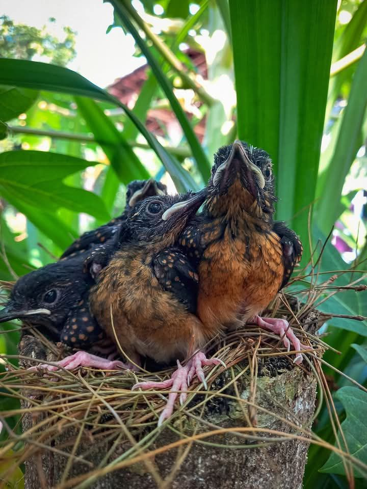
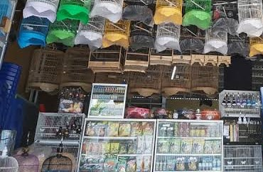
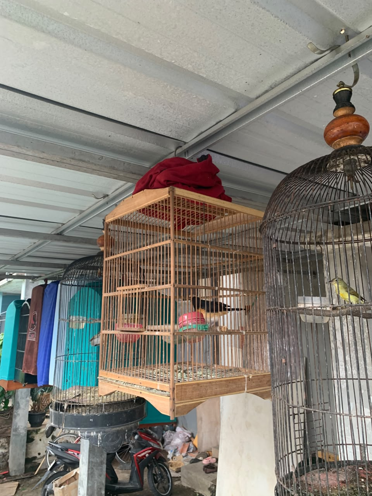

Jelajahi berbagai produk dan layanan yang ditawarkan oleh Alpha Bird Farm.

Ragam anakan dan trotolan murai batu dari indukan trah unggul (nasional) dengan kualitas terjaga.
Produk
Pilihan sangkar, pakan bernutrisi, dan aksesori harian untuk mendukung performa dan Kebutuhan pemeliharaan terbaik burung Anda.
Perlengkapan
Layanan perawatan dan penitipan burung dengan standar kebersihan dan perhatian penuh.
LayananUntuk mengetahui ketersediaan produk dan informasi lebih lanjut, silakan hubungi Alpha Bird Farm melalui halaman kontak.
Hubungi Kami